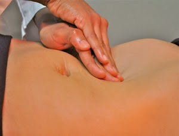

"Natural forces within us are the true healers of disease."-Hippocrates
Veronica Avery Licensed Acupuncturist and Herbalist
Practicing Traditional Chinese Medicine in Paso Robles since 2010.
We serve residents of San Luis Obispo county and Monterey County
including Paso Robles, Templeton, Atascadero, King City, Lake Nacimiento.
Make An Appointment Today
We are currently accepting new patients, and we look forward to meeting you.
We Care About Our Patients

Avery Acupuncture & Natural Medicine, Inc.
5.0 ★★★★★
Based on 55 reviews
powered by 
Saundra Alvarez
3 years ago
★★★★★
I can't believe it has taken me this long to write a review for Veronica... better late than never. If you are looking for compassionate care than this is where you should be. The first visit consists of a full overview of your concerns and problem areas. Veronica is thorough in her quest to craft a patient specific plan. Personally I never thought I'd be okay with the thought of allowing another person to poke me repeatedly with needles, but with gentle care and time I was able to push through my own anxieties. I went in for sciatic pain and the improvement is astonishing. I felt like I'd be relegated to pain pills and nerve blockers but thanks to Veronica that has not been the case. You won't regret coming here.
Sharon Ross
4 years ago
★★★★★
I had chronic pain from an old shoulder injury. I went and saw Veronica Avery a couple of years ago. She took the time to really listen to me. With her knowledge and healing hand, I was pain free for the first time after my injury! I've gone back a couple of times after doing something to aggravate my shoulder. Once again, with acupuncture and cupping she helps me be able to be pain free and enjoy doing recreational activities. I highly recommend Veronica!
Gilbert Charley
4 years ago
★★★★★
Very clean and professional service. Rejuvenated after going there. Great atmosphere also. The owner is very kind and sweet. I will visit again soon. Hope you all consider visiting this place.
Weston Jolly
4 years ago
★★★★★
Never have I offered a review of an acupuncturist before today. And nothing pleases me more to offer an authentic testimonial when it is so deserved. I’ve gone to at least three or four other practitioners prior to meeting Verona of Avery Acupuncture & Natural Medicine in Paso Robles, CA so this isn’t my first rodeo. I confess, as a spiritual channel, I’m both picky and super sensitive on many many levels. For me getting bodywork is a really big deal because I need to be able to relax in both the energy and the expertise of the person whom I’ve chosen to gain assistance. Seven months ago I got Long Covid and then four months later I relapsed. Spiritually, I know the reasons for my journey, but I really needed some help, physical help, in realigning my body. I’ve always been super active; riding motocross, walking, hiking, lifting and so much more. So being sick for so long has been super challenging. I was so weak during my first visit that it took all of my energy, for the day, just to attend the appointment. The office is unbelievable in terms of the ambience and energy, including the two small pups who greeted me upon arriving. Yet, the real gold is Veronica herself who operates on a level that is pure love in terms of her focus and intent to heal and assist. Only four visits later I’m back to doing stair climbs, lifting weights, walking and even doing some light jogging. There’s much more I intend to do in my rebalancing but Veronica and her staff has been extraordinary. I’ve chosen to share my experience for the expressed purpose that anyone considering getting “real help” might know they’re in truly in the hands of someone who is exceedingly dedicated to assisting you heal. Namaste.
Mihir Patel
4 years ago
★★★★★
Veronica at Avery Acupuncture has been great! She listens carefully to what’s going on and treats root causes of issues. They always make time for appointments and I make a point to come in every time I’m back in the area.
Daisha Schwartz
5 years ago
★★★★★
I was referred to Avery Acupuncture by a friend. Never having done acupuncture before, and not being entirely comfortable with needles, I was really nervous going into my first appointment. Veronica made my first experience really positive. Each session is tailored to my needs and I always leave feeling refreshed and relaxed. I can tell Veronica has my best interests in mind, and she really cares for all of her patients. The entire staff is welcoming and kind. The office is neat and clean. Overall, I would highly recommend Avery Acupuncture.
Dona Robertson
7 years ago
★★★★★
I went to see Veronica for painful sciatica up and down my right leg. Veronica was very thorough in the questions she asked at the first visit, took all the time that was needed. Veronica is very skilled and professional. I had 5 acupuncture with cupping sessions, and I feel SO much better. Her office assistant, Geri, is kind and efficient. The whole office is clean and well-maintained, with calm-inducing light and decor. It’s on the second floor and an elevator is available, but I enjoyed using the stairs to monitor my healing. I will definitely be going back for any further needs. Highly recommend!
Centrally located in Paso Robles
We serve residents of San Luis Obispo county and Monterey County including Paso Robles, Templeton, Atascadero, King City, Lake Nacimiento.
Address
1704 Spring Street Suite 202
Paso Robles, CA
Hours
Monday
8:00 to 4:00 p.m.
Tuesday and Thursday
8:00 to 5:30 p.m.
Phone
(805) 400-9723